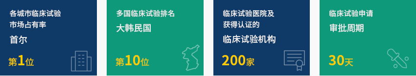
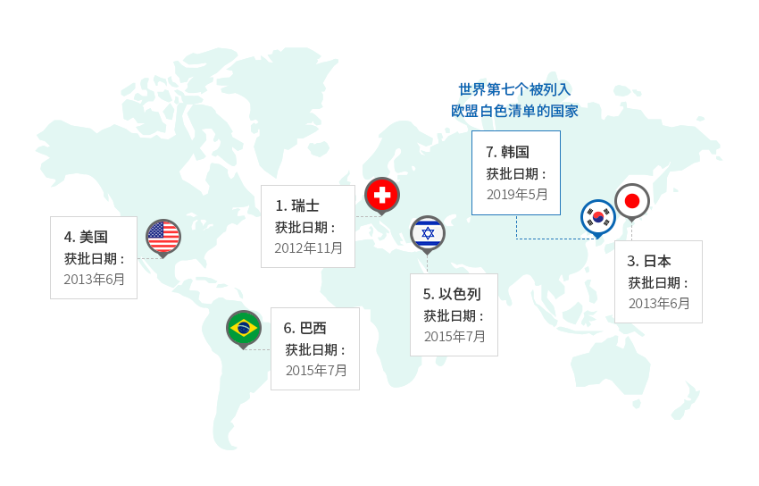
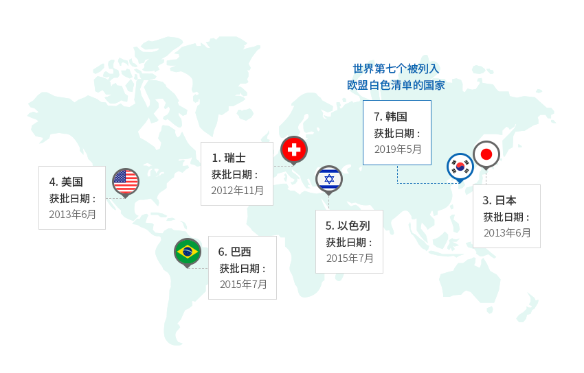
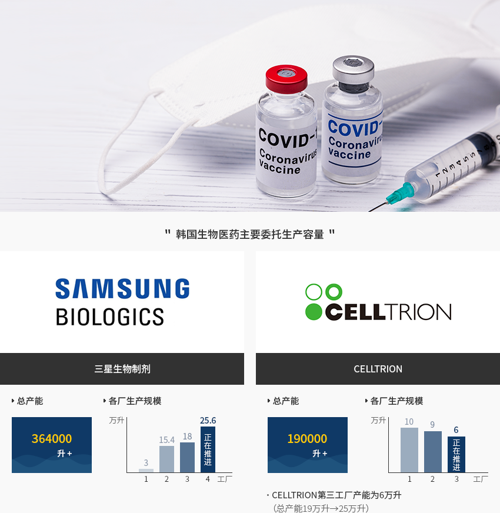
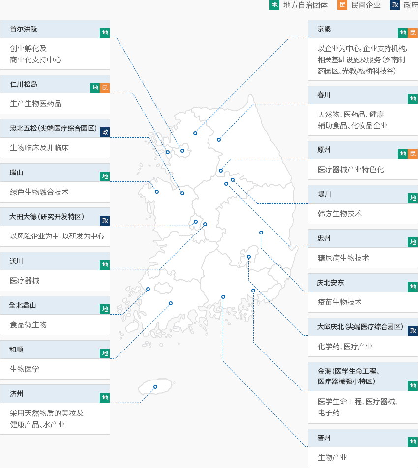

制药及生物技术
- Home
- Why KOREA
- 产业
- 制药及生物技术
-
世界级临床试验及国际监管环境 世界临床试验市场排名第六 关闭内容世界级临床试验及国际监管环境 世界临床试验市场排名第六韩国食品医药品安全处（MFDS）针对美国国立卫生研究院（NIH）的临床试验注册中心（ClinicalTrials.gov）
数据的分析结果显示，2020年，韩国产业界主导的临床试验市场占有率从2019年的世界第八上升到第六，。
多国临床试验排名也从2019年的第十二上升到第十尤其，首尔的临床试验占有率在全球城市中稳居世界第一（自2017年开始）。审批申请周期短（30天），IRB组建效率高，30多家临床试验医院拥有庞大丰富的患者库，
临床试验机构（Clinical trial centers, CTCs）多达170家。得益于这些出色的基础设施，
韩国境内医药品临床试验获批数量较2020年同比增长12%，呈现持续增长态势。随着2014年加入国际药品认证合作组织（PIC/S），2016年加入国际人用药品注册技术协调会（ICH），
韩国备受认可，被誉为医药品监管领域发达的国家。- 各城市临床试验市场占有率‘首尔’第一位
- 多国临床试验排名‘大韩民国’第十位
- 临床试验医院及获得认证的临床试验机构200家
- 临床试验申请审批周期30天
 ※ 资料来源：食品医药品安全处/韩国生物技术协会"欧盟白色清单（GMP书面确认书免交国家）"世界第七个被列入欧盟白色清单的国家
※ 资料来源：食品医药品安全处/韩国生物技术协会"欧盟白色清单（GMP书面确认书免交国家）"世界第七个被列入欧盟白色清单的国家- 1.瑞士获批日期：2012年11月
- 3.日本获批日期：2013年6月
- 4. 美国获批日期：2013年6月
- 5.以色列获批日期：2015年7月/li>
- 6.巴西获批日期：2015年7月
- 7.韩国获批日期：2019年5月
※ 资料来源：食品医药品安全处 -
世界级的 生物医药品委托生产设施가 打开内容世界级的 生物医药品委托生产设施作为世界生物医药品委托生产基地，韩国的地位正不断提升。
三星生物制剂在当前36.4万升产能的基础上，正在新建25.6万升规模的第四工厂。
CELLTRION也在推进6万升规模的第三工厂建设项目，当前的产能为19万升。在新冠病毒全球大流行的情况下，韩国企业与全球疫苗供应商合作进行委托生产。
SK生物科学正在准备代工生产阿斯利康及诺华的疫苗，三星生物制剂已与莫德纳(Moderna)
签订委托生产合同供应新冠疫苗。"韩国生物医药主要委托生产容量"
- Samsung Biologics - 三星生物制剂
- 总产能 - 364,000 升+
- 各厂生产规模
- plant 1: 30,000 升
- plant 2: 154,000 升
- plant 3: 180,000 升
- plant 4: 256,000 升 (正在推进)
- CELLTRION
- 总产能 - 190,000 升+
- 各厂生产规模
- plant 1: 100,000 升
- plant 2: 90,000 升
- plant 3: 60,000 升 (正在推进)
CELLTRION第三工厂产能为6万升(总产能19万升→25万升)
- Samsung Biologics - 三星生物制剂
-
生物科技产业总体发展 以成药为中心 打开内容以成药为主的 生物科技产业的总体发展据韩国食品医药安全处统计，2020年韩国国内医药品领域产值约为24.5655万亿韩元，同比增长10.1%，
最近5年的年均增长率为6.9%。在所有医药品中，成药的产值占85.6%，医疗药占14.4%。
另外，2020年韩国医药品出口额约为84亿美元，同比大幅增长62.5%。
进口额约为73亿美元，同比增长5.2%。(单位 : 万亿韩元, %, 亿美元, $)生物产业动向 分类, 年度 资料来源：以2018年为基准的韩国生物产业现状调查 -
高科技生物药品 研发成果及政府扶持政策 打开内容高科技生物药品的 研发成果及政府扶持政策得益于生物仿制药出口，生物药品市场年均增长13%，成为韩国的发展动力产业。在生物类似药领域，韩国在世界上崭露头角。截至2021年9月，美国FDA批准的
31个生物类似药中有8个是在韩国研发的产品，证明了韩国具有迅速的研发能力。韩国政府将生物产业列入国家创新发展三大关键产业，并依托“K-全球疫苗中心”建设战略培育产业，
制定企业扶持政策，以应对和治疗新冠肺炎。只要医药和生物领域的外商投资符合一定条件，
就能依据《税收特例限制法》减免所得税、购置税、财产税，而实施令项下的资本货物还能免除关税、
个别消费税、增值税。自2022年起，通过“划定高科技投资地区”和“优化现金补贴制度”，
面向外商投资企业进一步加大优惠力度。另一方面，韩国政府制定了《关于安全及支持高科技再生医疗与高科技生物医药的法律》，从2020年9月开始实施。
高科技生物药品是指以活细胞、组织或基因为原料制造的生物药品，包括细胞治疗剂、基因治疗剂、
组织工程制剂等。由于高科技生物药具有不同于现有合成药品的特性，韩国制定了合理的许可及审查体系，
包括符合特性的制造及质量管理标准等。
-
全球制药公司 在韩临床研究及共同研发案例增多 打开内容全球制药公司 在韩临床研究及共同研发案例增多据韩国全球医药产业协会透露，2019年进军韩国的35家全球制药公司对临床研究领域的研发费用投入达
到4亿美元（4,837亿韩元），呈逐年增长的趋势。2019年，前述企业在韩国进行的临床研究达到1,536例。全球制药公司协助韩国制药公司开拓海外市场，与其共享全球市场的开拓经验。"跨国药企与韩国药企共同开拓海外市场的案例"跨国药企与韩国药企共同开拓海外市场的案例 外商投资企业, 韩国企业/机构, 合作内容 外商投资企业 韩国企业/机构 合作内容 雅培（Abbott） 意向企业 定期进行全球临床及许可/监管最新趋势等培训 艾伯维（Abbvie） 东亚ST 合作研究免疫抗癌剂MerTK抑制剂 詹森（Janssen） 柳韩洋行 合作研发肺癌治疗剂拉泽替尼（Lazertinib），签订商业化技术出口合同 默沙东（MSD） 三星Bioepis 多项生物仿制药全球商业化合作 东亚ST 合作开拓超级细菌抗生素新药特地唑胺（tedizolid）的海外市场 韩美药品 投资研发综合高血压治疗剂COZ XQ，协助出口到50多个国家 SEOUL BIOHUB 成立MSD创新合作伙伴办公室（2020年3月），支持韩国企业进军全球市场 裕利医药（Zuellig Pharma） 保宁制药 签订有关Kanarb、Dukarb等产品的东南亚13国独家授权合同 ※ 资料来源：韩国全球医药产业协会《2020年度报告》全球制药公司与韩国制药公司、医疗机构、研究机构等开展多项新药开发研究。"跨国药企与韩国药企共同研发案例"跨国药企与韩国药企共同研发案例 外商投资企业, 韩国企业/机构, 合作内容 外商投资企业 韩国企业/机构 合作内容 阿斯利康（AstraZeneca） 东亚ST 共同研发3种免疫抗癌剂先导物的相关物质 拜耳（Bayer） Vital Smith、SKYLABS等 推动拜耳总部开放创新项目的韩国版本“Grants4Apps Korea” 施贵宝（BMS） 三星生物制剂 签订有关商用生物抗体新药的生产合同 - 为物色韩国合作伙伴，启动“Korea Open Innovation” 葛兰素史克（GSK） 韩国主要研究机构 共同研发新一代抗癌新药，针对免疫抗癌剂新药候选物质进行“First Trial in Patient”研究 利奥医药（Leo Pharma） - 进行皮肤疾病研究支持项目即“LEO Open Innovation Lab”项目 礼来（Lilly） 韩国化学研究院 签订开放型创新新药开发合作协议 默沙东（MSD） 跨部门新药开发事业团 与韩国多家生物风险企业开展抗癌剂联合研发项目（如Genexine、Medpecto、Pharmabcine、NKMAX等） 诺华（Novartis） SEOUL BIOHUB 设立诺华韩国创新合作办公室（Novartis Korea Innovation Partnering Office） 加图立中央医疗院 签署关于用卫生医疗数据和数码技术合作研发新药的MOU（2020年4月） 辉瑞（Pfizer） - 开展“INSPIRE”项目（2012年～目前） Sanofi-Aventis - 与韩国生物领域朝阳初创企业合作推动新一代抗癌剂开发项目 Sanofi-Pasteur SK生物科学 开展新一代肺炎球菌蛋白结合疫苗全球联合研发项目 ※ 资料来源：韩国全球医药产业协会《2020年度报告》 -
分地区打造 生物集群 打开内容分地区打造 生物集群韩国各地都建有生物相关集群，其中也不乏医药品特色集群，主要分布在五松、大邱、仁川、
和顺等地。生物集群是指大学、企业、医院、研究所等在各地构筑紧密网络的结合体。
进军韩国的海外制药企业如果入驻上述地区，可享受减免税收等多种优惠，
还可与相关高校、企业、医院、研究所等开展合作。"韩国生物集群情况"[地]地方自治团体, [民]民间企业, [政]政府- 首尔洪陵(地方自治团体): 创业孵化及商业化支持中心
- 京畿(地方自治团体, 民间企业): 以企业为中心，企业支持机构及相关基础设施与服务（乡南制药园区、光教/板桥科技谷）
- 仁川松岛(地方自治团体, 民间企业): 生产生物医药品
- 春川 (地方自治团体): 天然物、医药品、健康辅助食品、化妆品企业
- 忠北五松（尖端医疗综合园区）(政府): 生物临床及非临床
- 原州 (地方自治团体, 民间企业): 医疗器械产业特色化
- 瑞山(地方自治团体): 绿色生物融合技术
- 堤川 (地方自治团体): 韩方生物技术
- 大田大德（研究开发特区）(政府): 以风险企业为主，以研发为中心
- 忠州 (地方自治团体): 糖尿病生物技术
- 沃川 (地方自治团体): 医疗器械
- 庆北安东 (地方自治团体): 疫苗生物技术
- 大邱庆北（尖端医疗综合园区） (政府): 化学药、医疗产业
- 全北益山 (地方自治团体): 食品微生物
- 金海（医学生命工程、医疗器械强小特区）(地方自治团体): 医学生命工程、医疗器械、电子药
- 和顺 (地方自治团体): 生物医学
- 晋州 (地方自治团体): 生物产业
- 济州 (地方自治团体): 采用天然物质的美妆及健康产品、水产业
※ 资料来源：保健福祉部、各地方自治团体
※ 资料协助：韩国生物技术协会


Invest KOREA
医药健康项目经理
Jeong Da Hee
新产业引进组
T.+82-2-3460-7865
选址信息推荐
Industrial complex information
[Incheon Metropolitan City Michuhol-gu] Incheon General Industrial
Complex
Click [Go to Detailed Information] to go to the relevant information screen of
Smart K-Factory service of Industrial Complex Corporation.
-
Complex nameIncheon General Industrial Complex
-
Initial designation date1973.04.01
-
Designated area(m2)1,136,269
-
ManagementIncheon Metropolitan City Corporation
-
Nearby RailwayBupyeong Station
-
Distance from station(km)7
-
Nearby AirportGimpo International Airport
-
Distance from airport(km)29
-
Industrial water Supply capacity(ton/day)-
-
Affiliation local governmentIncheon Metropolitan City Michuhol-gu
-
Population2,943,491
Industrial complex information
[Chungcheongbuk-do Cheongju City] Osong Life Science Complex
Click [Go to Detailed Information] to go to the relevant information screen of
Smart K-Factory service of Industrial Complex Corporation.
-
Complex nameOsong Life Science Complex
-
Initial designation date1997.09.23
-
Designated area(m2)4,833,314
-
ManagementKorea Industrial Complex Corporation
-
Nearby RailwayCheongju Station
-
Distance from station(km)9
-
Nearby AirportCheongju International Airport
-
Distance from airport(km)21
-
Industrial water Supply capacity(ton/day)25000(㎥/day)
-
Affiliation local governmentChungcheongbuk-do Cheongju City
-
Population843,782
Industrial complex information
[Gyeongsangbuk-do Andong City] Gyeongbuk Bio 2nd General Industrial
Complex
Click [Go to Detailed Information] to go to the relevant information screen of
Smart K-Factory service of Industrial Complex Corporation.
-
Complex nameGyeongbuk Bio 2nd General Industrial Complex
-
Initial designation date2016.02.29
-
Designated area(m2)299,829
-
ManagementGyeongsangbuk-do Andong City
-
Nearby RailwayAndong Station
-
Distance from station(km)19
-
Nearby AirportDaegu International Airport
-
Distance from airport(km)111
-
Industrial water Supply capacity(ton/day)1863(㎥/day)
-
Affiliation local governmentGyeongsangbuk-do Andong City
-
Population158,867
Industrial complex information
[Gyeongsangbuk-do Andong City] Gyeongbuk Bio General Industrial
Complex
Click [Go to Detailed Information] to go to the relevant information screen of
Smart K-Factory service of Industrial Complex Corporation.
-
Complex nameGyeongbuk Bio General Industrial Complex
-
Initial designation date2004.07.05
-
Designated area(m2)941,431
-
ManagementGyeongsangbuk-do Andong City
-
Nearby RailwayYecheon Station
-
Distance from station(km)15
-
Nearby AirportDaegu International Airport
-
Distance from airport(km)111
-
Industrial water Supply capacity(ton/day)5287(㎥/day)
-
Affiliation local governmentGyeongsangbuk-do Andong City
-
Population158,867
Industrial complex information
[Gyeonggi-do Hwaseong-sity] Gyeonggi Hwaseong Bio Valley General Industrial
Complex
Click [Go to Detailed Information] to go to the relevant information screen of
Smart K-Factory service of Industrial Complex Corporation.
-
Complex nameGyeonggi Hwaseong Bio Valley General Industrial Complex
-
Initial designation date2012.07.04
-
Designated area(m2)0
-
ManagementHwaseong City Corporation
-
Nearby RailwaySuwon Station
-
Distance from station(km)27
-
Nearby AirportGimpo International Airport
-
Distance from airport(km)52.5
-
Industrial water Supply capacity(ton/day)3154(㎥/day)
-
Affiliation local governmentGyeonggi-do Hwaseong-sity
-
Population842,864
Industrial complex information
[Jeollabuk-do Iksan City] Iksan 4th Industrial Complex [formerly: Iksan
General Medical Science]
Click [Go to Detailed Information] to go to the relevant information screen of
Smart K-Factory service of Industrial Complex Corporation.
-
Complex nameIksan 4th Industrial Complex [formerly: Iksan General Medical Science]
-
Initial designation date2008.03.14
-
Designated area(m2)502,825
-
ManagementJeollabuk-do Iksan City
-
Nearby RailwayHwangdeung Station
-
Distance from station(km)4
-
Nearby AirportGunsan Airport
-
Distance from airport(km)47
-
Industrial water Supply capacity(ton/day)4,540(㎥/day)
-
Affiliation local governmentJeollabuk-do Iksan City
-
Population283,496